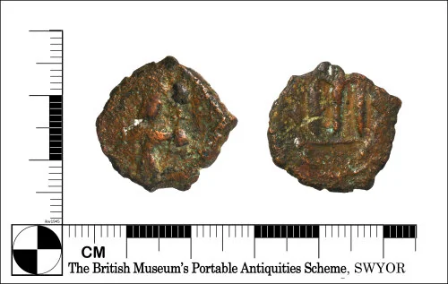
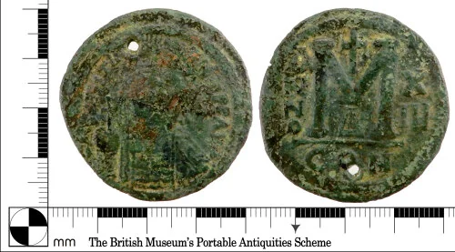

Ukázková galerie
Galerie obsahuje tři ukázkové byzantské mince použité v databázové a webové části projektu Archaeo-LLM. Obrázky pocházejí z veřejné databáze Portable Antiquities Scheme.


Galerie byzantských mincí a archeologických nálezů
Galerie obsahuje tři ukázkové byzantské mince použité v databázové a webové části projektu Archaeo-LLM. Obrázky pocházejí z veřejné databáze Portable Antiquities Scheme.

